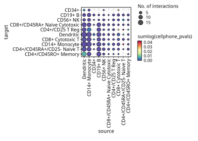
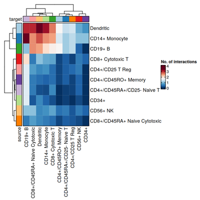

scplotter is an R package that is built upon plotthis. It provides a set of functions to visualize single-cell sequencing data in an easy and efficient way.
Gallery


Visualization with LLMs
provider <- tidyprompt::llm_provider_openai(api_key = Sys.getenv("OPENAI_API_KEY"))
chat <- SCPlotterChat$new(provider = provider)
chat$ask("Generate a cell-cell communication plot for the cellphonedb_res data.")
# Tool identified: CCCPlot
# Data object identified: cellphonedb_res
# Running tool: CCCPlot
chat$ask("Do a heatmap instead")
# Tool identified: CCCPlot
# Data object identified: cellphonedb_res
# Running tool: CCCPlot
Credits
scplotter is built upon the following fantastic packages:
-
plotthisfor the core plotting functions. -
tidypromptfor the LLM interface. -
Seuratfor the Seurat object support. -
LIANAfor the cell-cell communication analysis. -
scRepertoirefor the TCR/BCR repertoire analysis. -
Giottofor the spatial data analysis.